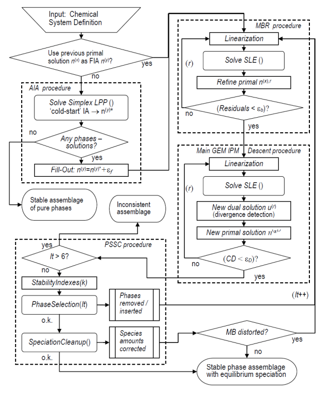
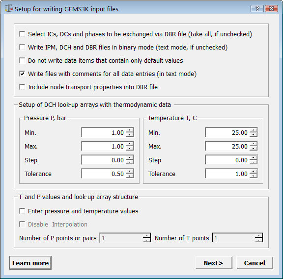
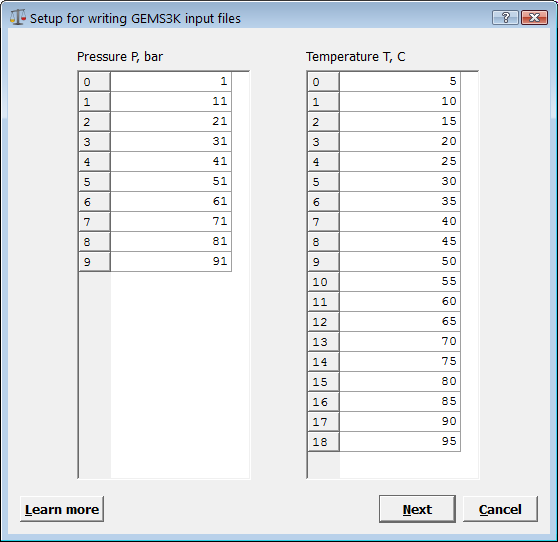
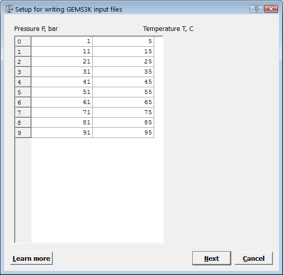

GEMS3K Code for Solving for GeoChemical Equilibria
GEMS3K Code for Solving for GeoChemical Equilibria
GEMS3K Code for Solving for GeoChemical Equilibria
GEMS3K Code for Solving for GeoChemical Equilibria The GEMS3K code is a numerical kernel module of the GEM-Selektor v.3 code package for Gibbs energy minimization (GEM), enhanced with RAM- and file-system- data exchange interfaces without GUI in its standalone variant. GEM is a method of chemical thermodynamic modeling with emphasis on complex heterogeneous equilibria involving phases-solutions and sorption, implemented in a GEM-IPM-3 algorithm.
The standalone GEMS3K code is designed for coupling GEM chemical solver with existing and new fluid-mass-transport (FMT) codes, parameters fitting codes, and other upper-level simulation tools. The GEMS3K source code is compatible with ANSI C++ and can be compiled on many computer platforms (Windows, Linux, Mac OSX, HPC Merlin, Cray XT, etc.) using various optimizing compilers (GNU C++, MinGW GNU C++, PGI C++, Intel C++, Microsoft C++, … ). Check here for technical information about code installation and building libraries and examples.
The input data can be provided in ASCII files (edited or exported from GEM-Selektor per mouse-click), the output can also be written in ASCII files. Alternatively, the whole data exchange with a transport code part can be performed in RAM using the DATACH and DATABR data structures. This data exchange interface is implemented in two C++ classes named TNode and TNodeArray.
The TNode class provides functionality for attaching GEMS3K kernel to an existing transport simulation code, which keeps the chemical information for all nodes in its own memory, and calls a GEM calculation for each node separately. Check here how to use the TNode interface in a coupled code.
The TNodeArray class is built on top of the TNode class and can store both chemical and dynamic data for all nodes of the mass transport problem; the re-calculation of equilibrium states after the mass transport step can be done with a single call (with internal parallelization possible); this may be suitable for developing of a new transport code (more...).
Both GEMS3K and GEM-Selektor codes are developed jointly at the Paul Scherrer Institute (NES LES) and at ETH Zurich (IGP ERDW). The standalone GEMS3K code is distributed open-source under the LGPL v.3 license (more...).
2. GEM IPM – the numerical kernel of GEM-Selektor
2.1. The Gibbs Energy Minimization (GEM) method (brief overview)
2.2. The GEM IPM-3 algorithm (brief overview)
2.3. TMulti class - an implementation of the GEM IPM-3 algorithm
2.4. How to export GEMS3K input files from the GEM-Selektor package
3. GEMS3K - a standalone GEM solver with data exchange interface
3.1. DATACH data exchange structure for sharing chemical system definition (CSD)
3.2. DATABR data exchange structure for defining i/o data for a single node system
3.3. TNode class for simple coupling of GEM IPM module to transport codes
4. Programming and technical issues
4.1. Subversion repository of GEMS3K source code
4.2. Mass transport part in C++
4.3. Mass transport part in Fortran
4.4. Building GEMS3K executables
Modern approaches to reactive mass transport (RMT) or fluid mass transport (FMT) modelling require simultaneous account for the mass transport of contaminants through aqueous and/or gas phase in subsurface, together with their interaction with wall-rock minerals by means of (ad)sorption, mineral (co)precipitation, dissolution, etc. These chemical processes are inherently complex; they depend on the redox state of the system, and may involve many phases and chemical species, some of which are kinetically dependent. Such interactions may adversely affect the mass transport via the porosity and permeability changes e.g. due to mineral dissolution or precipitation.
Direct inclusion of all possible chemical reactions in the mass transport model is possible (e.g.[Steefel and Maher 2009]), but may render it intractable in 2D or 3D space. If this is the case, the chemical model must be dramatically simplified to a few reactions, which makes its chemical plausibility doubtful. The modeller must make (often arbitrary) decisions about which chemical interactions are relevant, and which ones can be neglected.
An alternative "operator-splitting" approach would be to keep a complex enough chemical model in a kind of "black box" which can be applied separately to each node of the FMT model at each given time point t. The input of the "chemical black box" at time t is just the vector of bulk chemical composition b of the reactive part of the node, as well as temperature T, pressure P, and optionally, kinetic constraints k on some reactions or amounts of certain components. Some or all of these inputs could have been changed by the mass transport part on its previous iteration time step t-1.
The "chemical black box" equilibration is then applied to each node independently at time point t, to produce changed speciation n (amounts of chemical species in all reactive phases), new phase volumes, redox state (expressed in values of Eh, pe of aqueous solution, gas fugacities, etc.), chemical potentials of components, and so on. This procedure can also detect a disappearance of some phases or appearance of some new phases in some nodes (e.g., due to dissolution or precipitation of solids).
After the "chemistry" run over all nodes is finished, the next time step of the FMT algorithm can be done for the time point t+1, using the updated concentrations of mobile species in aqueous and/or gas phases at time t. The FMT part redistributes the matter between nodes (subject to mass conservation), thus producing corrected compositions of reactive part of each node. So, the coupled RMT algorithm actually runs over all nodes twice at the time point t: once doing a mass transport iteration using node compositions obtained earlier (at t-1), and then by applying the "chemical black box" to each node at time t, producing the updated speciation which will be used by the FMT part at the next time point t+1.
This idea of "operator-splitting" coupling is not really new and it has already been implemented in a number of coupled codes (PHREEQC, OpenGeoSys, MCOTAC, ....). These codes use different mass transport algorithms, but in most cases the same type of chemical solver based on the law of mass action (LMA) and the Newton-Raphson method for minimizing the mass balance deviations. However, another type of chemical solvers based on Gibbs energy minimization (GEM) can also be coupled with the FMT codes.
Both LMA and GEM can solve the so-called forward chemical modeling problem, which consists in finding the concentrations (or amounts) and activities of chemical species in aqueous and other phases present in a complex chemical system in an equilibrium state defined by temperature T, pressure P, and the system bulk composition b. In practice, calculations for solving such problems range from trivial to complex, depending on the number of species, phases, and stoichiometry units. The complexity further increases when several phases-solutions with redox sensitive components are included in the mass balance; a typical case is the aqueous - solid solution (Aq-SS) system which also involves a non-ideal fluid (gas mixture) phase. Even more complex systems can be considered, e.g. those involving (ad)sorption on several co-existing sorbents.
Chemical speciation problems were traditionally solved with help of the LMA codes, supported with tools for calculation of Lippmann functions and saturation indexes. A good introduction into modern LMA chemical speciation numerical methods can be found in several textbooks [Van Zeggeren and Storey, 1970; Morel and Hering, 1993; Bethke, 1996] and in the manuals of speciation codes such as PHREEQC [Parkhurst and Appelo, 1999] or CHESS [van der Lee, 1998].
The advantages of LMA - excellent mass balance accuracy and fast convergence - are best revealed in the case of simple aqueous speciation models with known stable pure solid phase assemblage and known Eh and fugacities of gases. The LMA codes require thermodynamic data only for the product species (usually aqueous/surface complexes, minerals, and gases), but not for the master species (usually aqueous ions) - this "input data economy" can also be viewed as an advantage in some cases.
However, solving with LMA codes the complex equilibria that involve aqueous electrolyte, many possible condensed phases (including solid solutions or fluids) is, in general, an inefficient process. Different approaches to this problem are used in LMA chemical solvers. In the Geochemists Workbench [Bethke,2008], any pure mineral phase is taken as master species. Because there is no way to mix master species, this program cannot handle solid solutions or gas mixtures at all. Other LMA codes (such as PHREEQC) consider minerals and gases as product species. As pointed by [Reed, 1982], usually no solids are taken into mass balance in the initial speciation calculation; after it is done, the saturation indexes are computed for each stoichiometrically feasible mineral phase, the mineral with the highest supersaturation is included into the mass balance, the speciation is computed again, and this loop is repeated until no supersaturated phases are left in the list.
The real problem in LMA approach is how to determine the saturation index of the solid solution phase or of the gas mixture. For the ideal (solid) solution, this can be done over iterations using ionic activities available from aqueous speciation. For non-ideal SS, this is a problem which has no general solution, as explained on Page 94 in [Bruno et al, 2007]. Because of that, the LMA chemical solvers can at best treat only ideal solution phases and simple binary non-ideal solid solutions that can be described using Lippmann functions and diagrams. If many solids and/or solid solutions are potentially present, a simple LMA aqueous speciation calculation turns into a series of many runs controlled by non-rigorous test procedures for selecting (over)saturated solids one-by-one, without a theoretical guarantee of convergence to a unique result. This kind of retardation is difficult to evaluate, but, with a large list of possible condensed phases, more than ten LMA loops may be required to include all stable solids into mass balance.
A complementary GEM (Gibbs Energy Minimization) method of thermodynamic modeling has been implemented in several computer codes such as ChemSage/ FactSage (http://www.factsage.com); Gibbs/HCh [Borisov & Shvarov, 1992]; Selektor-C [Karpov et al., 2001]; and GEM-Selektor ([Kulik et al., 2004]; http://gems.web.psi.ch). GEM algorithms can solve complex chemical equilibria in a straightforward way. The applicability of GEM is limited only by the knowledge of standard-state molar properties of end-members and the non-ideal interaction parameters of mixing in each multi-component phase. In the following description, mainly the convex programming approach to GEM will be considered [Karpov et al., 1997; 2001], as implemented in GEMS3K and GEM-Selektor v.3 code [Kulik et al., 2004] that contains a variant of Nagra/PSI chemical thermodynamic data base [Hummel et al, 2002].
The GEM method computes simultaneously the primal (amounts of dependent components and their activity coefficients) and the dual (chemical potentials of independent components) solutions. From the latter, other thermodynamic quantities (activities, concentrations, pH, pe) and criteria of equilibrium are obtained. If non-ideal phases are included then the activity coefficients of their components are adjusted on each GEM iteration and come out as part of the primal solution.
In comparison with chemical models based on the law of mass action (LMA, such as PHREEQC or MINEQL) so far mainly used in coupled FMT-chemistry codes, GEM has advantage that it can handle any number of potentially possible phases, including any number of (highly) non-ideal solutions, which slow the convergence only moderately down (see details in [Bruno et al., 2007], p.90-104). From bulk chemical composition, temperature and pressure, GEM calculates amounts and activities of all components in all stable phases, plus any activity-derived quantities such as gas fugacity, pH and Eh. Volumes of all phases present in the (node) reactive system can be found when the standard molar volumes for their components are provided in thermodynamic database. The disadvantages of GEM in comparison to LMA codes are much slower convergence and generally worse mass balance precision. The latter can be greatly improved at cost of a few additional iterations and using the internally consistent thermodynamic data [Chudnenko ea, 2002].
The present GEMS3K code is a GEM-Selektor kernel chemical solver equipped with a data exchange interface that makes it possible to couple any existing FMT code with the GEM "chemical black box" to produce a coupled modeling code with high chemical plausibility. As in standalone GEMS3K code there is no GUI and data exchange occurs via files or directly in computer RAM, such code can be parallelized and compiled on various platforms up to HPC clusters.
The traditional "operator-splitting" coupling, where the chemical information for all nodes is stored in the mass transport part which calls the chemical solver for each node one-by-one, is supported by the TNode C++ class. When a new FMT code is written, the whole data storage for all nodes can also be organized (using a TNodeArray C++ class) into node arrays, with each node accessible from the GEM IPM-3 routines or from the FMT program.
This document describes the structure of GEMS3K program and the data exchange interface (DATACH and DATABR structures), followed by an overview of TNode and TNodeArray classes and examples of their usage (see also another document GEMS3K User Reference.html for detail on using TNode class functions). In a companion document gems3k-iofiles.html, the format of GEMS3K text input/output files is described together with the reference for data objects encountered in these files. Most of these data objects are the same as in GEM-Selektor package or similar; links are provided wherever necessary.
GEMS3K package is a set of C++ classes and functions extracted from the GEM-Selektor code package for thermodynamic modelling by Gibbs energy minimization (GEM), available at http://gems.web.psi.ch/GEMS3K/. The satndalone GEMS3K code implements the same GEM IPM-3 chemical solver as in GEM-Selektor, linked to TMulti C++ class and data structure, enhanced with RAM- and file- data exchange interfaces implemented in TNode and TNodeArray classes, but cut from the GEM-Selektor graphical user interface, database engine, and script interpreter.
The GEMS3K code has been designed for coupling the GEM IPM-3 chemical solver with existing and new fluid mass-transport (FMT) codes. The program source code is compatible with ANSI C++ and can be compiled on many computer platforms (Windows, Linux, HPC Merlin, Cray XT, etc.) using many optimizing compilers (GNU C++, PGI C++, Intel C++, Microsoft C++, … ).
The input data can be provided in human-readable ASCII files, the output can also be written in ASCII files. Alternatively, the whole data exchange with a transport code part can be performed in RAM using DATACH and DATABR data structures. This data exchange interface is implemented in two C++ classes – TNode and TNodeArray.
The TNode class provides functionality for attaching the GEM IPM-3 kernel module to an existing transport model code which keeps the chemical information for all nodes and calls GEM calculation for each node separately. The TNodeArray class is built on top of the TNode class and can store both chemical and dynamic data for all nodes of the mass transport problem. Recalculation of equilibrium states in all nodes after the mass transport step can be done with a single call (with internal parallelization possible). This may be suitable for developing of a new coupled code. The GEMS3K code is distributed open-source under LGPL v.3 license.
In GEM approach [for details, see Karpov et al., 1997; Karpov et al., 2001; Kulik et al., 2004; Kulik et al., 2012], the total mole amounts of chemical elements ni and (zero) charge nz comprise the input bulk composition of the chemical system expressed using n(N) Independent Components (IC). All n(L) stoichiometrically feasible chemical species or Dependent Components (DC) are taken into the mass balance through their chemical formulae and mole amounts nj. A given j-th DC belongs to a single- or multi-component aqueous, gaseous, fluid, liquid, solid, or sorption phase. The stability of j-th DC at temperature T and pressure P of interest is defined by its molar Gibbs energy function gT,P. Activities and concentrations of DCs are treated separately in each phase, taking into account appropriate standard and reference states, concentration scales, and models of (non)ideal mixing.
The
G(n(x))
-> min
subject to
An(x) =n(b)
where n(b) =
G(n(x))
= SUM( vj * n(x)j ), j belongs to
Here, vj is the normalized primal chemical potential of j–th dependent component, calculated for each DC from its standard molar Gibbs energy function, concentration and activity coefficient taken in the appropriate scale (molal for aqueous species, mole fraction for solid solutions etc.). Activity coefficients are functions of the respective phase composition and interaction parameters; they are calculated between GEM iterations according to the model of non-ideal mixing chosen for each phase. For aqueous electrolyte, various modifications of the Debye-Hückel equation are commonly used for low-to-moderate ionic strength, as well as SIT and Pitzer models for high dissolved salt concentrations.
The Interior
Points Method
(IPM) non-linear
v - ATu >=
0;
An(x) =n(b); n(x) >=
0; n(x)(v - ATu) = 0
where T is the transpose
operator. The
last condition of orthogonality zeroes off
the molar amounts of unstable species and phases. The
Karush-Kuhn-Tucker conditions were also extended
for the case when the sought-for amounts of
some metastable species are constrained
from below and/or above to model “partial equilibrium” states
It is an advantage of GEM method (in "convex programming" variant) that it yields two solutions - the "primal" n(x) for speciation (analogous to LMA) and the "dual" u for chemical potentials of independent components (not available from LMA solvers). The dual solution may open innovative ways to constructing mass transport models for diffusion-dominated systems, since the diffusion of any component may be considered as being driven by the gradient of its chemical potential.
The GEM IPM3 algorithm is described in more detail in a paper [Kulik et al., 2012] , as well as in earlier report [Chudnenko et al., 2002]. A short overview is given in [Bruno et al., 2007], pages 94-104. The mass balance precision and speed of GEM IPM-3 calculations have been dramatically increased [Dmytrieva et al., 2009] and now are comparable with that of LMA codes, at least in "smart initial approximation" SIA mode.
The basic idea of the GEM IPM algorithm consists in finding such a distribution vector n of bulk chemical composition of the system b over its thermodynamic phases and their components that the total Gibbs energy G(n) of the system is at minimum at temperature and pressure of interest. Each phase component (chemical species) is represented by its stoichiometry and the standard chemical potential (molar Gibbs energy function go(T,P)) at temperature T and pressure P of interest. As seen on Fig. 2-1, the process consists of four major steps.

Fig. 2-1. Simplified flowchart of the GEM IPM-3 algorithm
The first stage is to obtain an initial approximation of the n vector which is close enough to the G(n) minimum, so that the GEM process would succeed in finding the solution of the problem. In principle, any previously calculated speciation vector n for this setup of thermodynamic system (even for different b, T, P) can be used as initial approximation in "smart initial approximation" (SIA) mode. If no previous solution is available at all, or the available one is bad, then the so-called "automatic initial approximation" (AIA) must be obtained by solving a linear programming (LP) sub-problem using a modified simplex method.
The LP sub-problem is constructed by truncating all the mixing terms from chemical potential expressions for all components of phases-solutions, which is equivalent to considering any component as a pure phase. Given n(N) Independent Components (usually chemical elements and charge) in the bulk composition vector b, the simplex solution contains at most n(N) non-zero elements in the AIA speciation vector n(AIA). This is also consistent with the Gibbs phase rule. The n(AIA) vector contains many zero amounts of chemical species (dependent components) which may be relevant aqueous species or form stable condensed or fluid phases, although this is not a priori known. For that reason, the zero mole amounts in the AIA initial approximation are filled out with a default amount (1e-6 - 1e-5 mol) which then would increase or decrease upon GEM iterations depending on the stability of the chemical species in this chemical system.
Usually, the number of aqueous species is greater than n(N). If the number of stoichiometrically possible phases exceeds n(N), such system is called a "multisystem" [Karpov et al., 1997]. Equilibria in multisystems cannot be solved directly by LMA algorithm (see a comment here), but such equilibria can be solved in one GEM run, if the initial approximation belongs to the so-called "feasible domain".
So, the second stage - a special MBR() algorithm - consists in checking whether the AIA or SIA vector n is feasible, i.e. whether the mass balance residuals for all independent components are small enough. This is usually so in the case of previously available SIA vector, but not so for the n(AIA) vector. If the current amount of j-th species nj falls below a certain numerical threshold (ca. 1e-30 mol), it will be zeroed off. This eliminates the j-th species from subsequent GEM iterations in order to avoid numerical troubles. However, if the total amount of a phase falls below another threshold (Pa_DS between 1e-12 and 1e-20 mol) then all components in this phase will be zeroed off and the whole phase is eliminated from next GEM iterations.
On each iteration, the MBR() algorithm checks the mass balance residuals and tries to change the largest elements of the AIA vector in such a way that the mass balance accuracy would be at least satisfactory (i.e. deviations less than 1e-12 mol). This is usually done in a few iterations, and then the initial approximation vector is ready for the main GEM algorithm.
The third stage - the Main IPM Descent algorithm - adjusts the elements of speciation vector n to minimize the total Gibbs energy of the system G(n) while keeping mass balance deviations the same or lower as inherited from the MBR() step. This is the core of GEM approach that uses the duality (Kuhn-Tucker) theorem by introducing Lagrange multipliers ui conjugate to the elements bi of the bulk composition vector. These Lagrange multipliers form the so-called "dual solution" of the GEM problem (the "primal solution" being the n speciation vector). The total Gibbs energy of the system can be calculated either as G(n) = sum(nj vj) where vj = f(goj, n) is the primal chemical potential of j-th dependent component., or as G(b) = sum(bi ui). Towards equilibrium, G(n) scalar value approaches a (global) minimum which equals the G(b) (global) maximum. Hence, the criterion of convergence can be constructed using any normalized function of G(n) - G(b) which is ideally zero, but numerically must be below a small threshold (for the quadratic Dikin's criterion, DK < Pa_DK = 1e-6).
Each iteration of the IPM Descent consists of three steps. First, a new dual solution approximation u is found by solving with the Cholesky decomposition method a SLE constructed from the previous primal solution, stoichiometry matrix, and weight multipliers. Next, the vector of descent direction is found by comparing primal and dual chemical potentials for each dependent component. Finally, a step length multiplier is determined from a condition that no new nj value should break the "feasible domain" of mass balance and metastability constraints. The new approximation of the n speciation vector is found by incrementing non-zero elements of the old one with a product of the respective element of the descent direction vector and the scalar step length. Convergence is usually achieved in 1 to 10 iterations in the SIA and 20 to 200 iterations in the simplex AIA case.
The fourth stage is called "phase selection" (implemented in the PhaseSelection() function). It consists in calculation of a phase stability index for each multi-component phase present in non-zero amount, as well as for each pure phase, either in the mass balance or not. The stability index is computed mainly from the dual solution vector u and stoichiometry of phase components. For any stable phase, the stability index (in logarithmic scale) must be close to zero. However, if the initial approximation was bad, or there were errors in stoichiometry or go value for a dependent component, the value of stability index may indicate that a phase present in the mass balance is unstable and must be excluded, or vice versa - a phase absent from the mass balance (zeroed off) is stable and must be included. If any such phase has been detected, it is zeroed off respectively its component amounts are filled out with small amounts, and the whole sequence is repeated from Step two (but without the overall fill-out step). If, after three to five such refinement loops, the PhaseSelection() still finds inconsistent phases, the behavior of GEM IPM algorithm depends on the original initial approximation. If it was SIA, the mode is automatically switched to AIA and calculation begin "from scratch", i.e. from solving the LP sub-problem for a generic IA. If it was AIA, an error message is generated and the GEM solution is not accepted.
All these numerical paths of the iterative GEM IPM-3 algorithm are controlled using ca. 20 thresholds and flags, values of which were empirically found in many test and modelling calculations in various systems. These numerical controls can be adjusted in the GEM-Selektor Project module window, or in the *ipm.dat input file of the GEMS3K standalone program, as described in the companion manual.
Algorithms described in the previous section – the GEM IPM-3 kernel - are implemented in the TMulti class (see ms_multi.h file). This C++ class includes a work structure called MULTI, as well as a number of supplementary data structures and functions. Before starting the GEM IPM calculation, all input data arrays in the MULTI work instance must be filled out.
In the GEM-Selektor code, most of this data is taken from the work instance of TSyst class (SYSTEM data structure) and from the work instance of TMTparm class (MTPARM data structure), both connected to the RMULTS data structure containing lists of components and phases included into a GEM-Selektor modeling project. This data is 98% accessible through GEM-Selektor module windows. Upon collecting the information into the MULTI structure, the data for all components and phases that have been switched off will be skipped automatically, i.e. the chemical system definition will be compressed.
In the GEMS3K code, the only way to exchange input and output data with the GEM IPM kernel (and the work instance of the MULTI data structure) is using TNode class functions that access the DATACH and DATABR structures. One way is to read the DCH, IPM and DBR input files of GEMS3K; another way (used in coupled reactive transport codes) is to exchange data directly in computer memory (see User Reference file and doxygen-style documentation).
The format and content of GEMS3K I/O files are described in the I/O File Formats documentation file. In the text variant, these I/O files can be typed by the user with help of a simple ASCII text editor. However, it is highly recommended to export them from the GEM-Selektor code, which can save a lot of work time, especially when the coupled modeling must be performed at temperatures and pressures varying from node to node or with time. This is more than just technical issue. It is essential to investigate the behavior and the stiffness of the chemical system in detail (by performing GEM-Selektor runs that simulate irreversible mixing, oxidation/reduction, or titration) before inserting it into the coupled reactive transport model, calculation of which is far more expensive. Exporting the DCH, IPM and DBR files in GEM-Selektor is quite easy, as outlined in the next section.
It is possible to produce a set of DCH, IPM and DBR files readable by GEMS3K for any single chemical system that has been set up and calculated in GEM-Selektor at least once. The description below is also available in the GEM-Selektor runtime help database. First, refer to the help tutorial there for learning how to make a GEM-Selektor modeling project and set up the chemical system of your interest in a new SysEq record.
This method produces one DCH, one IPM and one DBR file for a given single chemical system definition and GEM task. How to read these files in is described here.
In the Single System dialog, calculate and save the desired SysEq record. Then click on "Data" "Export GEMS3K files..." menu command. This opens the "Setup for writing GEMS3K input files" dialog, which bydefault looks like this:

In the upper group, you have a choice to write GEMS3K files in text mode (default) or in binary mode. Activating the "Do not write data items that contain only default values" will result in much smaller IPM and DBR files because only data and numerical settings that differ from default values will be written; by reading these files, GEMS3K will assume default values for all data objects that are not present in the input files. Note that this makes sense to do if you are sure that you work with the same GEMS3K version in both GEM-Selektor and the coupled code. The next option ("Write files with comments..."), if deactivated, results in much more compact though less human-readable text input files. The last option ("Include node transport properties into DBR file") should be unchecked (default) when exporting files for coupled codes such as OGS-GEMS where all such information is kept in the transport part of the code. The topmost option "Select ICs, DCs, and phases to be exchanged via DATABR file...", if activated, can be used for setting up very compact DBR files that only contain items that will change in standalone or coupled calculations (yet untested; more about this here ...); normally, just leave it unchecked (default).
The middle group can be used to set up the lookup arrays with thermodynamic data (to be written at the end of the DCH file). This group consists of two iterators - one for pressure and one for temperature. In the simplest case such as shown above, the data will be calculated for one pressure and one temperature, which are taken over from the current GEM task.
However, if coupled-code calculations will be performed with variable temperature and pressure, a look-up array must be exported. In this case, the user must specify wide enough pressure and temperature intervals (in Min. and Max. fields on both sides) and the step values such that at least 10 grid points will be created for pressure and 10 to 40 grid points for temperature (or less to keep the temperature step greater than 3 - 5 degrees). The "Tolerance" fields define the area around grid points where interpolation will not be done and values corresponding to the grid point will be extracted directly, if T and P fall within tolerances at this point.
The lower group settings let the user to fine-tune the setup of look-up arrays and their T,P grid values after the pressure and temperature iterators have been set up. If the checkbox "Enter pressure and temperature values" is activated, a next page of the dialog will appear showing values of pressure and temperature, automatically generated from P and T iterators using the interval and step size set there. If necessary, these values of P and T can be modified by the user, then the program will use them to construct and export the look-up array data. This occurs differently, depending on the "Disable Interpolation" checkbox state. If this checkbox is not checked (default), the usual P,T grid consisting of nP*nT (P,T) points will be generated, and interpolation will be enabled in the whole P and T intervals space. The number nP of pressure grid points can be different from the number nT of temperature grid points.
However, if the "Disable Interpolation" checkbox is checked, nT will be set equal to nP, and only nP (P,T) pairs will be used as a grid to generate and export the look-up arrays of thermodynamic data; the interpolation will be disabled, so GEMS3K calculations shall be done only at (T,P) pair values given in the grid table (to be seen in the next wizard page) within tolerances given under P and T iterators.
If different number of P and/or T points (greater than 1) was set by the user, the P and T values will be automatically generated using these given nP (nT), Min. and Step values from the iterators, again with the possibility for the user to modify values in the second page of this dialog, shown below:
The "Next" button proceeds either to the next page (if "Enter pressure ..." checkbox is activated), or directly to the standard dialog where the path to the folder where the generated input GEMS3K files will be saved.
If the "Enter pressure ..." checkbox is activated and the "Disable Interpolation" checkbox is not activated, the second page will look like that shown below. In this example, the Pressure iterator on the first page has been set to 1 bar start, 91 bar end value, and 10 bar step; the Temperature iterator has been set to 5 C start, 95 C end value, and 5 degrees step. The user can now enter other numbers, if necessary, for instance, change pressure to 1; 10; 20; 30; ... bar; or some P and T values adjusted to allow more precise interpolation around some important phase transitions. The lookup grid will have 190 (T,P) points, among which the interpolation in P,T space takes place.
If both the "Enter pressure ..." checkbox and the "Disable Interpolation" checkbox are activated, the second page for the previous example will take the following shape:
In this case, the number of (T,P) pairs was determined from the Pressure iterator and applied to the whole interval given in the Temperature iterator, which yields 10 (T,P) pairs. The values can be edited now, if necessary, e.g. in accordance with experimental (T,P) data; the GEMS3K program will not perform interpolation, which means that only calculations at 10 given (T,P) pair values will be possible, as well as at slightly different T,P values within tolerances for each grid point. The look-up arrays will contain data for 10 (T,P) pair values, not for 100 (T,P) points as it would be in the case when the interpolation is allowed.
When GEMS3K input files have been exported from GEM-Selektor for use standalone coupled-code calculations that produce DBR files with different composition and speciation, such files can be imported into GEM-Selektor to investigate these results in "Single System" dialog and related EqDemo: and Multi: submodule windows. The files can be imported (read in) only in that modeling project where they have been originally exported from.
To import GEMS3K files, arrange them in any folder in the same way as if they would be exported: one IPM, one DCH and one DBR file, with file names listed in the respective .lst file. For example, the initial GEMS3K files were exported from the SysEq record "Carbonates:G:IsoCaCdDol:0:0:10:75:0:" into a file set consisting of files "IsoCaCdDol-ipm.dat", "IsoCaCdDol-dch.dat", "IsoCaCdDol-dbr-0-0000.dat", and "IsoCaCdDol-dat.lst". The latter file lists the previous three files as
-t "IsoCaCdDol-dch.dat" "IsoCaCdDol-ipm.dat" "IsoCaCdDol-dbr-0-0000.dat"
(this means that all four files must be in the same folder; -t tells that the files are in text format). The key of the exported SysEq record can be found at the beginning of the "IsoCaCdDol-ipm.dat" file. In standalone calculations, the DCH and IPM files will not be changed, only the new DBR files will be generated. To import one of those (e.g. "IsoCaCdDol-dbr-result-00001.dat"), it has to be placed in the same folder where DCH and IPM files reside, and its name must be entered into the .lst file, for instance, called "IsoCaCdDol-dat-to-import.lst" with contents
-t "IsoCaCdDol-dch.dat" "IsoCaCdDol-ipm.dat" "IsoCaCdDol-dbr-0-0000-result.dat"
When a folder with the set of GEMS3K files is ready, proceed as follows. Start GEM-Selektor and go in "Equilibria Calculation" mode, select and open the appropriate project ("Carbonates" in this example). In "Single System" dialog, execute the "Data" "Import GEMS3K DBR file..." menu command.
In the appearing "Browse for GEMS3K *.lst file to import" dialog, find in the folder and select the necessary .lst file ("IsoCaCdDol-dat-to-import.lst" in this example), and click "Open". You should see now the "Enter record key" dialog with fields corresponding to SysEq record key from the imported IPM file. Edit fields as you like, to make sure that no such SysEq record already exists in the project, and click Ok. The program reads GEMS3K files, and replaces the previous recipe by the bulk composition from DBR file taken over into the bi_ data object (input mole amounts of Independent Components), as well as metastability constraints and selection of components from the imported IPM and DCH files.
In the appearing "Input Recipe" dialog, you should see now the bulk system composition from the imported DBR file, given as bi_ values. Click "Ok" to proceed. Now, click "Open EqDemo window..." toolbar button to explore the imported contents of the GEM task data structure just as they were computed by the standalone program, without being re-calculated in GEM-Selektor. You can save the SysEq record with these imported contents.
You can also re-calculate the imported equilibrium state to see if there is any difference, e.g. by differences in interpolated and directly calculated thermodynamic data. These differences (if any) can be seen in the gEx column in MTparm (Thermodynamic data) window. To re-calculate, it is the best to clone the imported SysEq record and re-run GEM, then the data from originally imported and re-computed equilibria can be copy-pasted to a spreadsheet and compared there.
The GEM IPM-3 algorithm described in Section 2 is implemented in a TMulti C++ class. This class and related source code files are shared between the GEM-Selektor package (i.w. with GUI, database management system, script interpreter and runtime help system) and a standalone solver GEMS3K code. The difference between two programs is controlled by a compiler define key -DGEMIPMPLUGIN which has to be provided in the make- or project file for building any program that uses standalone GEMS3K. The global #define GEMIPMPLUGIN in the source code cuts any connection to the GEM-Selektor GUI, its data object descriptors, and data base functions. This is done because the main idea behind GEMS3K is to provide the same GEM chemical solver as that used in GEM-Selektor for easy coupling with existing fluid-mass-transport codes in the “operator-splitting” fashion, also capable for high-performance computing.
Because GEMS3K implemented as a “node-gem” example has no overhead on calling GUI or database functions, it provides a good opportunity to test performance of GEM IPM-3 module in terms of calculation times, as well as to locate parts of the code where most of the time is spent. The GEMS3K is a program arranged in three C++ classes: TMulti, TNode and TNodeArray.
The TMulti class is based on the MULTI data structure combined with all functions in which the GEM IPM-3 algorithm is implemented. TMulti class also contains functions that connect it with the TSolMod class library of built-in models of mixing in multi-component phases. A practically important part is a collection of numerical controls that define the convergence and accuracy of GEM IPM-3 algorithm. Description of these controls is provided in the gems3k_ipm.html file; they all can be changed also in the IPM input file of GEMS3K, as described in gems3k-iofiles.html file. The work data structure MULTI of the TMulti class contains parameters and coefficients used by the built-in non-ideal mixing models in phases-solutions implemented in the TSolMod class (documentation about input parameters in the IPM file is given in gems3k_tsolmod.html file).
The TNode class provides a simple non-GUI interface for loading the input chemical system definition and related thermodynamic and composition data into the IPM (MULTI) work structure, then running the IPM-3 algorithm for one calculation of equilibrium state, and extracting the calculated speciation into the DATABR structure (or DBR file). Description of TNode functions is provided in gems3k-useref.html file.
The TNodeArray class, built on top of the TNode class, can store both chemical and transport parameters for all nodes of the mass transport problem. Re-calculation of equilibrium states after the mass transport step can be done with a single call (with internal parallelization possible). This may be suitable for developing a new transport code. Description of TNodeArray functions will be provided in a separate document.
TNode class uses two data interface structures – DATACH and DATABR (defined in datach.h and databr.h headers, respectively). The structures can be allocated in computer RAM (one instance of DATACH and one or more instances of DATABR per a GEMS3K instance) and written to or read from text or binary files (DCH and DBR format, respectively). In addition, the IPM-3 specific data and arrays used by TSolMod I/O functions can be read from the IPM format file directly into the MULTI structure. As the TNode class (with certain extensions) is also part of the GEM-Selektor package, all three files can be produced per mouse click from there and then used in standalone coupled code calculations (see Section 2.4).
The GEMS3K program source code comprises a sub-set of C++ source code files used in the GEM-Selektor v.3 code. In GEMS3K, some numerical subroutines from the NIST JAMA-C++ TNT package for solving SLE are employed. The list of source code files common to both GEM-Selektor and GEMS3K programs is provided below.
|
File name |
Comment |
| array.h | Header and templates for
manipulating data arrays |
| databr.h | Header for the DATABR
input/output data exchange structure of GEMS3K |
| datach.h | Header for the DATACH input chemical system definition structure of GEMS3K |
| gdatastream.cpp | Implementation of file I/O
streams (with account for endianness in binary data files) |
| gdatastream.h | Header for I/O streams for
file access |
| io_arrays.cpp | Implementation of file I/O of
data arrays |
| io_arrays.h | Header for the file I/O data
arrays functionality |
| ipm_chemical.cpp | Implementation of
chemistry-specific functions from TMulti class used in the GEM IPM
kernel |
| ipm_chemical2.cpp | Implementation of chemistry-specific functions from TMulti class used in the GEM IPM kernel |
| ipm_chemical3.cpp | Calculation of activity
coefficients and respective corrections to chemical potentials in GEM
IPM |
| ipm_main.cpp | Implementation of main GEM IPM
descent algorithm |
| ipm_simplex.cpp | Implementation of LP
calculations of automatic initial approximation using the modified
simplex method |
| jama_cholesky.h | File from the NIST TNT
JAMA-C++ linear algebra numerical library |
| jama_lu.h | File from the NIST TNT JAMA-C++ linear algebra numerical library |
| ms_multi.h | Main header for the TMulti
class and MULTI data structure keeping data of GEM IPM-2 algorithm |
| ms_multi_file.cpp | Implementation of GEMS3K
file output (text dump file with TMulti data) |
| ms_multi_format.cpp | Implementation of GEMS3K file I/O (text and binary IPM files) |
| node.cpp | Implementation of GEMS3K
TNode class - data exchange interface for coupled codes |
| node.h | Header for the TNode class
(used in GEMS3K and in GEM2MT module of GEMS-PSI) |
| node_format.cpp | Implementation of GEMS3K file I/O (text and binary DCH and DBR files) |
| nodearray.cpp | Implementation of GEMS3K TNodeArray class - data exchange interface for coupled codes |
| nodearray.h | Header for the TNodeArray class (used in GEMS3K and in GEM2MT module of GEMS-PSI) |
| num_methods.cpp | Implementation of the internal
numerical solvers used in GEM IPM module |
| num_methods.h | Headers for internal 1-D and
2-D Lagrange interpolation function (used in TNode) |
| s_solmod.h | Definitions of the TSolMod class for built-in models of mixing in multicomponent phases |
| s_solmod.cpp | Implementation of the TSolMod base class |
| s_solmod2.cpp | Implementation of TSolMod derived classes for fluid phase models (TPRSVcalc, TCGFcalc, TSRKcalc, TPR78calc, TCORKcalc and TSTPcalc) |
| s_solmod3.cpp | Implementation of TSolMod derived classes for activity models of mixing in condensed (solid and liquid) phases (TVanLaar, TRegular, TRedlichKister, TNRTL, TWilson, TMargulesTernary, TMargulesBinary, TGuggenheim, TIdeal multi-site, TBerman) |
| s_solmod4.cpp |
Implementation of TSolMod derived classes for
ion-association aqueous activity models (THelgeson, TDavies,
TLimitingLaw, TDebyeHueckel, TKarpov, TShvarov) |
| s_solmod5.cpp | Implementation of TSolMod derived classes for specific ion interaction aqueous activity models (TSIT, TPitzer, TEUNIQUAC) |
| s_solmod6.cpp | Stub file for implementation of TModOther derived class of TSolMod |
| tnt.h | File from the NIST TNT linear algebra numerical library |
| tnt_array1d.h | File from the NIST TNT linear algebra numerical library |
| tnt_array2d.h | File from the NIST TNT linear algebra numerical library |
| tnt_i_refvec.h | File from the NIST TNT linear algebra numerical library |
| v_user.h | Header containing declarations
of platform-specific utility functions and classes |
| verror.h | Declarations for error
exceptions handling: classes TError and TFatalError |
The files are located in the "standalone/GEMS3K/" folder. Header files necessary for compiling or linking GEMS3K with the mass-transport part of the coupled code are shown in boldface.
The following two header files from the GEMS3K folder have the same names as those used in the GEM-Selektor source code, but different contents.
| m_const.h | Codes and parameters for
components and phases used in GEM IPM-3 work structure (standalone
version) |
| m_param.h | Basic codes and numerical
settings used in GEM IPM-3 operation (standalone version) |
The following files:
are also provided in the GEMS3K code. The files named "main.cpp" and "main.h" are needed for compiling an example of usage of GEMS3K. This file can be changed according to your tasks.
The GEM IPM-3 algorithm is implemented as a set of C++ functions belonging to the TMulti class that all use data and lists provided in a single instance of the MULTI data structure also inserted into the TMulti class. Before any GEM calculation, all data arrays must be allocated according to current number of components and phases, and all input data must be correctly filled into these arrays.
In the GEM-Selektor GUI environment, this is done automatically
before any GEM calculation is started. The data of the "internal" GEM
problem are compressed into the MULTI data structure by
collecting the items from the project system lists and arrays, as well
as from the thermodynamic data base. In the project system lists, many
independent components, dependent components, and phases may be switched
off by the user. Only the names and data for components and phases that
are switched on are copied into the MULTI structure. If
necessary, the scripts for calculating activity coefficients of
components of non-ideal solution phases are also compressed, together
with any needed coefficients for non-ideal interaction parameters or
surface complexation models picked up from the Phase database records.
This makes the GEM-Selektor GUI setup of thermodynamic models very
flexible, though rendering its software implementation more complicated
This route cannot be followed in the standalone GEMS3K program and any programs using it. The purpose of GEMS3K development was to keep the code implementation and handling of I/O data as simple as possible. This is the prerequisite for compiling the coupled FMT-GEM program on any computer architecture, up to parallel HPC clusters. Consequently, the GEMS3K program has no GUI, no direct access to thermodynamic data base, and it has no script interpreter included. It uses only pre-loaded data for a "compressed" GEM problem thoroughly contained in the MULTI structure (i.e. no components or phases that were switched off from the lists are allowed). Because of that, some restrictions apply in GEMS3K compared to the GEM-Selektor code
| Functionality | GEMS3K | GEM-Selektor |
| Phase- and Process math scripts | Not possible | Used |
| Built-in functions for activity coefficients | Used | Used |
| T-P corrections for input thermodynamic data | Interpolation using a lookup array (produced in GEM-Selektor) | Direct access to thermodynamic data base, built-in HKF EoS, Cp double integration, etc. |
| Access to input, output and work data | Batch mode only (data exchange I/O files or in RAM) | Direct GUI access, including multithread stepwise mode |
| Runtime help and tooltips | Not available | Available as runtime HTML help window and database |
All the input data required for GEM IPM-3 calculation can be provided in a human-readable ASCII file. However, producing such a file without a software front-end that can access the thermodynamic data base would be a rather difficult and error-prone process.
Moreover, reactive transport problems are usually represented by many nodes; reactive subsystems in all these nodes can share the same chemical system definition (CSD) and would usually differ only in bulk chemical composition (, temperature and pressure). Hence, it would make no sense to use the MULTI data structure directly for data exchange with the mass-transport part. Often, not all independent and dependent components must take place in exchange with the mass transport part - only those components that are somehow transported from node to node.
For these reasons, the whole content of the MULTI and BASE_PARAM data structures required for a GEMS3K calculation has been subdivided into three main parts, or data sub-sets (covered with the respective I/O files):
| Identifier
of data subset |
Data
structure |
Visibility |
I/O
file |
Comment |
| DCH |
DATACH |
GEM and MT parts |
*DCH .dat |
Input definition of the
chemical system (compressed) with selection of components and phases to
be exchanged with the mass-transport part common to all nodes of the
reactive transport problem |
| DBR |
DATABR |
GEM and MT parts |
*DBR .dat |
Data bridge for node-specific
chemical input and output properties (bulk composition, speciation,
temperature, pressure, optional kinetic constraints) |
| IPM |
MULTI,
BASE_PARAM |
GEM part only |
*IPM .dat |
Input information not relevant
for the tarnsport part of the code, but needed for GEM IPM-3
calculations (numerical
settings, parameters of non-ideal mixing models, adsorption models
etc.) |
Upon reading/writing, DCH and DBR files are automatically (un)packed to/from the MULTI memory structure inside of the TNode class instance.
The advantage of having three kinds of input files instead of one is
that in a typical reactive transport problem with tens to hundreds of
thousands of nodes, only one relatively large DCH and one IPM file is
needed, while node-specific data are provided in many small and compact
input-output DBR files which do not contain redundant information. As a
consequence, higher
performance and flexibility of the coupled code can be achieved.
In the current implementation of GEMS3K, two file I/O modes are possible: binary stream and text stream. Binary stream DCH, DBR and IPM files are simply images of the respective memory data structures; they may be non-transferable between different computer architectures. The text stream files are transferable; they have a human-readable format with tags (keywords) followed with the data; comment lines are possible almost anywhere. For most data items, the input order is free; many data objects can be skipped if the program can substitute default values. Only dimenions necessary for internal data allocation must be present at the beginning of DCH and IPM files. More about the file formats and structure of GEMS3K is provided in the companion manual.
The DATACH structure in datach.h file (mirrored in a DCH input file) contains an input definition of the chemical system visible to both GEMS3K and mass-transport parts of a coupled code. The respective dimensions, lists of components and phases etc. will be automatically copied into the MULTI work data structure of TMulti class upon an initialization of a TNode class instance, which includes reading of one DCH, one IPM and at least one DBR file.
The Chemical System Definition part of the DATACH structure includes the following data:
| Type | ID in
DATACH structure |
ID in
MULTI structure |
DOD label in GEMS | Tag in DCH file |
Content |
| long int |
nIC | N |
|
nIC |
Total
number of IC (independent components) |
| long int |
nDC | L |
|
nDC |
Total
number of DC (chemical species or dependent components) |
| long int |
nPH | FI |
|
nPH |
Total number of phases included into this CSD |
| long int |
nPS | FIs |
|
nPS |
Number of multicomponent phases (nPS <= nPH) |
| long int |
nDCs | Ls |
|
nDCs |
Total Number of DC in phases-solutions |
| short[] | nDCinPH | L1 |
L1 |
nDCinPH |
Number of DC included into each phase [nPH] |
| double[] | A | A |
A |
A | Stoichiometry
matrix A containing amounts of IC in one mole of each DC
[nIC][nDC] |
| double[] | ICmm | Awt |
icM |
ICmm |
IC atomic
(molar) mass in g/mol [nIC] |
| double[] | DCmm | MM |
mmDC |
DCmm * |
DC molar
mass in g/mol [nDC] |
| char*[] | ICNL | SB |
ICnam |
ICNL |
List of IC names, [nIC] strings of MaxICN length |
| char*[] | DCNL | SM |
DCnam |
DCNL |
List of DC names, [nDC] strings of MaxDCN length |
| char*[] | PHNL | SF |
PHnam |
PHNL |
List of names of phases, [nPH] strings of MaxPHN length |
| char[] | ccIC | ICC |
|
ccIC |
Class
codes of IC [nIC], see codes in enum ICL_CLASSES |
| char[] | ccDC | DCC |
DCC |
ccDC |
Class
codes of DC [nDC], see codes in enum DCL_CLASSES |
| char[] | ccPH | PHC |
|
ccPH |
Class
codes of phases [nPH], see codes in enum PHL_CLASSES |
* DCmm vector is automatically calculated from A and ICmm data and can be skipped from the DCH file
Because direct access to GEMS thermodynamic data base is not possible and functions for T,P corrections of thermodynamic data are not available in GEMS3K, the retrieval of thermodynamic data for dependent components is implemented through the Lagrange interpolation from look-up arrays provided in the DATACH structure and DCH file.These look-up arrays are automatically generated in in GEM-Selektor package and written into the DCH file. To use the lookup arrays, the TNode class employs a 2-D Lagrange interpolation routine that extracts thermodynamic data for temperature and pressure of interest and loads them into the MULTI structure before starting the IPM-3 calculation. In this way, the coupled models where temperature and/or pressure change over time or between the nodes can be easily implemented without blowing up the GEMS3K size and complexity.
The DATACH structure includes the following objects related to thermodynamic data:
| Type | ID | Dimensions | Comment | Tag in DCH file |
| long int |
nTp | 1 |
Number of temperature points in lookup grid arrays |
nTp |
| long int |
nPp | 1 |
Number of pressure points in lookup grid arrays |
nPp |
| long int |
iGrd | 1 |
Flag for lookup grid array setup: 0 - only V0 and G0; 1 - plus H0; 2 - plus S0; 3 - plus Cp0; 4 - plus A0 (Helmholtz); -1 - V0, G0 and DD (modes 1,2,3,4,-1 reserved) | iGrd |
| double[] | TKval | nTp | [nTp] discrete values of temperature T, in K, in ascending order |
TKval |
| double[] | Pval | nPp | [nPp] discrete values of pressure P, in Pa (1 bar = 1e5 Pa) in
ascending order |
Pval |
| double | Ttol | 1 |
Temperature tolerance, in K, for the interpolation of
thermodynamic data (default: 0.1) |
Ttol |
| double | Ptol | 1 |
Pressure tolerance, in Pa, for the interpolation of
thermodynamic data (default: 1000) |
Ptol |
The following lookup arrays of thermodynamic data can be allocated in DATACH (G0 and V0 are mandatory):
| Type | ID | Dimensions | comment | Tag in DCH file |
| double[] |
roW | [nPp][nTp][5] | Density of water-solvent, kg/m3 and its T and P
derivatives |
roW |
| double[] |
epsW | [nPp][nTp][5] | Dielectric constant of water-solvent, with its T and P
derivatives |
epsW |
| double[] | visW |
[nPp][nTp][5] | Viscosity of water-solvent, with
its T and P derivatives (units?) |
visW |
| double[] |
G0 | [nDC][nPp][nTp] | Go standard
molar Gibbs
energy function of DC, J/mol, corrected to T,P |
G0 |
| double[] |
V0 | [nDC][nPp][nTp] | Vo standard molar volume of DC, m3/mol, corrected to T,P | V0 |
| double[] |
S0 | [nDC][nPp][nTp] | So standard molar entropy of DC, J/K/mol,
corrected to T,P |
S0 |
| double[] |
H0 | [nDC][nPp][nTp] | Ho standard molar enthalpy function of DC, J/mol,
corrected
to T,P |
H0 |
| double[] |
Cp0 | [nDC][nPp][nTp] | Cpo molar heat capacity of DC J/K/mol, corrected
to T,P |
Cp0 |
Attention: the S0, H0 and Cp0 arrays will be
exported into DCH file only if the respective arrays in the modeling
project chemical system are activated in GEM-Selektor. The roW, epsW and visW arrays will not be exported if the system is non-aqueous (i.e. there is no water-solvent and no aqueous phase).
The roW,epsW and visW lookup arrays are provided because they are used internally in TSolMod functions for calculation of activity coefficients of aqueous species and water. The TNode class provides direct methods for accessing interpolated thermodynamic data from the mass-transport part at any time (see User's Reference).
The trivial case of lookup is when nTp = 1 and nPp = 1. In this case, each thermodynamic data lookup array (see the table above) must contain one value per DC for a single temperature TKval[0] and pressure Pval[0]. Conversely, no variations in T,P between the nodes or with time will then be allowed in the coupled model. Actually, the program checks that current T and P coincide with a value from TCval resp. Pval within the tolerance limits given in Ttol and Ptol, respectively, and picks up the values from grid arrays.
The more common case is when the pressure is fixed (nPp = 1), but the temperature in the nodes is allowed to change (e.g. nTp= 8). Then the Pval array must contain a single value of pressure (e.g. 1 MPa) and the TKval array must contain 8 values of temperature in ascending order (e.g. 5, 25, 45, 65, 85, 105, 125, 145 oC). These values define the overall temperature interval {4.9; 145.1 oC}. The differences between adjacent temperature values must not necessarily be equal. According to this setup, the roW and similar arrays must contain 8 values each that correspond to 1 MPa pressure and the temperatures given in TKval array. Given that there are 40 dependent components in the DCH list, the G0 array will consist of 8 values per DC, i.e. total 320 numbers, the first 8 contain Go values for the first species (for temperatures in TKval), next 8 values - for the second species, and so on. The V0 and other arrays will be organized likewise. The interpolation subroutine looks then separately for each dependent component to return Go and Vo values for P=10 bar and T of interest, interpolated in 1-D mode, if necessary.
In the most general case, the lookup grid arrays contain numbers for several discrete pressures and several discrete temperatures. Then the roW and epsW arrays are actually tables made of rows each containing values for different temperatures from TKval but one pressure value from Pval. The G0 and V0 arrays are then composed of such tables for each dependent component, arranged in the order in which the dependent components are listed in the DATACH DCNL list. The interpolation subroutine performs 2-D interpolation separately for each dependent component to return its Go and Vo values for P,T of interest. To achieve accurate interpolation over a wide temperature interval (300 oC or more), at least 30 temperature points and 10 pressure points are recommended.
There is a special 'pairwise' mode with equal number of pressure and temperature grid points nTp = nPp . In this mode, no interpolation is allowed, and only a T,P pair can be used in calculations that corresponds to one of the lookup grid points (within tolerances Ptol, Ttol). Accordingly, there will be nPp values in roW, epsW and visW arrays, and nDC*nPp values in G0, V0 and other thermodynamic data arrays.
Thus, the lookup arrays of thermodynamic data permit GEMS3K to extract thermodynamic data for any current T and P in any node, provided that T and P are within the respective ranges set in TKval and Pval lists. Before calling the GEM IPM-3 calculation, the interpolation is performed, and Go and Vo values are loaded directly into the MULTI structure, where they remain as long as the input P and T do not change. New interpolation is done when the requested P or T differ from previous values by more than Ptol, Ttol.
A special part of the DATACH structure (and file) defines the selection of components and phases to be exchanged with the mass-transport program via the DATABR structure instances for nodes, or via the DBR files. This part includes the following data items:
| Type | ID | Dimensions | Comment | Tag
in DCH file |
| long int |
nICb | 1 |
Number of IC (stoichiometry units) (<= nIC) used in
DATABR |
nICb |
| long int |
nDCb | 1 |
Number of DC (chemical species) <= nDC) used in DATABR |
nDCb |
| long int |
nPHb | 1 |
Number of Phases (<= nPH) used in DATABR |
nPHb |
| long int |
nPSb | 1 |
Number of Phases-solutions (<= nPS) used in DATABR |
nPSb |
| long int |
nAalp | 1 |
Flag for considering surface areas of phases in DATABR |
nAalp |
| long int[] | xIC | [nICb] | index mapping list for ICs used in DATABR data vectors |
xIC |
| long int[] | xDC | [nDCb] | index mapping list for DCs used in DATABR data vectors |
xDC |
| long int[] | xPH | [nPHb] | index mapping list for phases used in DATABR data vectors |
xPH |
The trivial
(default) case is when nICb
= nIC,nDCb =
nDC, nPHb =
nPH, nPSb =
nPS.In
this
case, the data vectors in DATABR structure exactly map the
corresponding data vectors in DATACH and MULTI
structures. For
instance, the bulk chemical composition of the system - vector b in
MULTI structure -
is the
same as the vector bIC provided
in the DATABR structure or DBR file. The index one-to-one
mapping lists xIC, xDC and xPH will
also be
trivial. For instance, given 7 independent components in the system (nIC = 7),
the xIC array
will simply
contain ascending indexes (0,1,2,3,4,5,6).
However, the usage of index mapping lists xIC,xDC and xPH may significantly accelerate data exchange and reduce memory size of the coupled RMT-GEM problem when some ICs, DCs and phases are not considered in transport between the nodes. For example, the break-through columns in experiments are often filled with the quartz sand, dissolution of which can be neglected, so the transport of dissolved silica can also be neglected. For a system involving calcium and magnesium, carbonate, and chloride, the DATACH name lists may look like:
<nIC> 8 <nDC> 27 <nPH> 8 <nPS> 2 <ICNL> 'C' 'Ca' 'Cl' 'H' 'Mg' 'O' 'Si' 'Zz' ( NB: 'Zz' stays for electrical charge). <DCNL> 'Ca+2' 'CaOH+' 'Ca(HSiO3)+' 'CaSiO3@' 'Mg+2' 'MgOH+' 'HSiO3-' 'SiO2@' 'SiO3-2' 'CO2@' 'CO3-2' 'HCO3-' 'CH4@' 'Cl-' 'H2@' 'O2@' 'OH-' 'H+' 'H2O@' 'H2' 'O2' 'Gr' 'Cal' 'Dis-Dol' 'Portlandite' 'Brc' 'Qtz'. <PHNL> 'aq_gen' 'gas_gen' 'Graphite' 'Calcite' 'Dolomite-dis' 'Portlandite' 'Brucite' 'Quartz' <nDCinPH> 19 2 1 1 1 1 1 1 |
Now, suppose that our mass transport model does not consider the transport of gas phase, electric charge, and of dissolved silicium species (non-transported components and species are marked red in the lists above). Some aqueous species and solids are very unlikely to appear (marked in pink) and thus can also be considered irrelevant for the mass transport model. Then the respective arrays of the DATABR structure can be made smaller, and values in them re-mapped to DATACH or MULTI structure as follows:
| <nICb>
6 <nDCb> 15 <nPHb> 3 <nPSb> 1 <xIC> 0 1 2 3 4 5 <xDC> 0 1 4 5 9 10 11 13 14 15 16 17 18 22 23 <xPH> 0 3 4 |
It is important to realize that the re-mapping does not affect any dimensions in the MULTI structure and any DATACH lists and arrays (the latter remain accessible in full also to the transport part of the coupled code). Values for components and phases marked red (non-transported) are skipped only from data arrays in all instances of the DATABR structure, but these components and phases are still present in DATACH and MULTI structures and take part in the equilibration. In the above example, the size of a DATABR instance (and DBR file) becomes more than 30% less compared with the trivial (complete) index mapping case. This decrease can be even more dramatic for some transport algorithms where only a certain tracer moves, or where the advection strongly prevails over the diffusion. In the latter case, only the bulk aqueous solution is migrated as the whole between the nodes, so all dependent components of the aqueous phase can be skipped from the DATABR mapping. In the above example, this would make the DATABR instance ca. 3-4 times smaller than in the trivial mapping case.
The presence of DATABR index mapping to DATACH structure provides a great flexibility in defining various coupling schemes between the RMT and the GEM parts. A natural question is - how the bulk composition of the node system can be set up when the mapping list xIC is incomplete? A straightforward answer: the full b vector can always be provided in the IPM file (from where it is directly loaded into the MULTI structure). The TNode class also has methods for the direct access to the b vector using the DATACH/MULTI indexation, which can be used e.g. for setting in all nodes the initial amounts of ICs skipped from the DATABR index mapping. Use of this functionality makes sense in 2-D or 3-D RMT problems with relatively large chemical system definition, where it may result in considerably less memory demand and higher performance of data exchange. However, the use of SIA initial approximation mode of GEM IPM-3 may be restricted in this case. Hence, for 1-D columns, we recommend using the trivial (complete) one-to-one mapping in DATABR structure and in DBR files.
This data structure relies on dimensions provided in the DATACH structure. Hence, the DCH file must always be read before DBR file(s) in order to initialize the MULTI and DATABR structures and perform dynamic memory allocation.
The DATABR structure contains several flags and three blocks of data. In the following tables, four columns are provided to indicate which data fields are set in DATABR by the mass transport part (MT-DB); which are given from DATABR instance to GEM as input data (DB-GEM); which data is taken from GEM to DATABR as GEM output (GEM-DB); and which are taken from DATABR instance to MT part data structures (DB-MT). The most important GEM input and output data are shown in boldface.
1. Chemical scalar variables (all double floating point numbers). Data for the inert sub-system are not included in GEM IPM-3 calculations and serve for completeness of node-related information used by the MT part (mainly on TNodeArray level).
| ID |
Comment | Units |
Default |
MT-DB | DB-GEM | GEM-DB | DB-MT | Label in DBR file |
| TK | Temperature T |
K |
25 |
+ | + | - | - | TK |
| P | Pressure P |
Pa |
1 |
+ | + | - | - | P |
| Vs | Volume V of reactive subsystem |
m3 |
+ | (+) | (+) | + | Vs |
|
| Vi | Volume of the inert subsystem |
m3 |
0 |
+ | - | - | + | Vi |
| Ms | Mass M of reactive subsystem |
kg |
0 |
+ | (+) | - | - | Ms |
| Mi | Mass of the inert subsystem |
kg |
0 |
+ | - | - | + | Mi |
| Gs | Gibbs energy of reactive subsystem |
J |
- | - | (+) | + | Gs |
|
| Hs | Enthalpy of reactive subsystem (reserved) |
J |
- | - | (+) | + | Hs |
|
| Hi | Enthalpy of the inert subsystem |
J |
0 |
+ | - | - | + | Hi |
| IC | Effective molal aqueous ionic strength | m |
- | - | + | + | IC |
|
| pH | pH of aqueous solution (-log10 molal) | - | - | + | + | pH |
||
| pe | pe (redox) of aqueous solution (-log10 molal) | - | - | + | + | pe |
||
| Eh | Eh (redox) of aqueous solution, |
V |
- | - | + | + | Eh |
Symbols in parentheses (+) indicate data items that are automatically re-scaled when loaded from DATABR instance into MULTI structure, or scaled back when extracted from MULTI to DATABR instance. Only extensive properties are re-scaled.
2. Chemical data arrays for the reactive sub-system (all double* C++ type). Values of nICb,nDCb,nPHb and nPSb can be found in the DATACH instance (or DCH file). Access to all arrays in DATABR instance requires the usage of DATACH index mapping lists xIC,xDC and xPH.
| ID | Dimensions | Comment | Units |
Default |
MT-DB | DB-GEM | GEM-DB | DB-MT | Label in DBR file |
| bIC | [nICb] | Bulk amounts of
independent components |
mol |
0 |
+ | (+) | - | - | bIC |
| rMB | [nICb] | Mass balance residuals from GEMIPM |
mol |
- | - | (+) | + | rMB |
|
| uIC | [nICb] | IC chemical potentials (dimensionless) | - | - | + | + | uIC |
||
| xDC | [nDCb] | DC amounts n(x)
in equilibrium state |
mol |
0 |
{+} | {(+)} | (+) | + | xDC |
| gam | [nDCb] | DC activity coefficients (dimensionless) |
1 |
{+} | {+} | + | + | gam |
|
| dul | [nDCb] | Upper metastability restrictions on xDC |
mol |
1e6 |
+ | (+) | - | - | dul |
| dll | [nDCb] | Lower metastability restrictions on xDC |
mol |
0 |
+ | (+) | - | - | dll |
| aPH | [nPHb] | Specific surface areas of phases |
m2/kg |
0 |
+ | + | - | - | aPH |
| xPH | [nPHb] | Total amounts of phases |
mol |
- | - | (+) | + | xPH |
|
| vPS | [nPSb] | Volumes of phases-solutions |
m3 |
- | - | (+) | + | vPS |
|
| mPS | [nPSb] | Masses of phases-solutions |
kg |
- | - | (+) | + | mPS |
|
| bPS | [nPSb][nICb] | Bulk compositions of phases-solutions |
mol |
- | - | (+) | + | bPS |
|
| xPA | [nPSb] | Amounts of solvent/sorbent in phases-solutions |
mol |
- | - | (+) | + | xPA |
|
| bSP |
[nICb] |
Bulk composition of the equilibrium solid part
of the system |
mol |
- |
- |
(+) |
+ |
bSP |
Symbols in parentheses (+) indicate data items that are automatically re-scaled when loaded from DATABR instance into MULTI structure, or scaled back when extracted from MULTI to DATABR instance. Only extensive properties are re-scaled. Symbols in braces {} indicate optional use for calculation of equilibrium in SIA (smart initial approximation) mode of GEM IPM-3 algorithm.
3. FMT node properties, all scalar double values, can be used for storing mass transport parameters for nodes mainly at TNodeArrayTNode level. This information is normally not exchanged in the single-call RMT-GEM coupling at the implementation level.
| ID | Comment | Units |
Default | Label in DBR file |
| Tm | Actual total simulation time |
s |
0 | Tm |
| dt | Actual time step |
s |
0 | dt |
| Dif | General diffusivity of disolved matter in the node | 0 | Dif | |
| Vt | Total volume of the node
(voxel) |
m3 |
0 | Vt |
| vp | Advection velocity (in
pores) in this node |
m/s |
0 | vp |
| eps | Effective (actual) porosity normalized to 1 | 1 | eps | |
| Km | Actual permeability |
m2 |
0 | Km |
| Kf | Actual Darcy's constant |
m2/s |
0 | Kf |
| S | Specific storage
coefficient, dimensionless (re-scaling factor for the system
mass) |
1 | S | |
| Tr | Transmissivity in the node |
m2/s |
0 | Tr |
| h | Actual hydraulic head
(hydraulic potential) |
m |
0 | h |
| rho | Actual carrier density for density-driven
flow |
kg/cm3 |
0 | rho |
| al | Specific longitudinal
dispersivity of porous media |
m |
0 | al |
| at | Specific transversal
dispersivity of porous media |
m |
0 | at |
| av | Specific vertical
dispersivity of porous media |
m |
0 | av |
| hDl | Hydraulic longitudinal dispersivity |
m2/s |
0 | hDl |
| hDt | Hydraulic transversal dispersivity |
m2/s |
0 | hDt |
| hDv | Hydraulic vertical dispersivity |
m2/s |
0 | hDv |
| nto | Tortuosity factor, dimensionless |
1 | nto |
The scaling factor S may be used for scaling the input/output extensive variables of GEM IPM for keeping the size of reactive sub-system in GEM runs reasonable, regardless of the node size. Especially in finite-element methods, this can be necessary.
Attention: The above data fields in Table 3 except Tm and dT can only be used in the DATABR structure definition (and read from the DBR file) by compiling GEMS3K with a global compiler key directive -DNODEARRAYLEVEL. This key is required for any TNodeArray - level coupled code.
4. GEM IPM-3 and RMT operation control flags and return codes (all scalar short integer values)
| ID | Comment | Default | Label in DBR file |
| NodeHandle | Node identification handle | 0 | NodeHandle |
| NodeTypeHY | Node type (hydraulic), see typedef NODETYPE | 0 | NodeTypeHY |
| NodeTypeMT | Node type (mass transport), see typedef NODETYPE | 0 | NodeTypeMT |
| NodeStatusFMT | Node status code FMT, see typedef NODECODEFMT | 0 | NodeStatusFMT |
| NodeStatusCH | Node status code CH, see typedef NODECODECH | 1 | NodeStatusCH |
| IterDone | Total number of iterations performed in the last GEM IPM-3 run for this node | 0 | IterDone |
The IterDone field can be used after a GEM calculation for diagnostic purposes (e.g. to keep track of GEM IPM-3 performance). The TNode class also provides several function calls that return the elapsed and pure GEM calculation time.
The first four flags are only important for the RMT part implemented at TNodeArray level.
For calling GEM IPM-3 calculations, the correct handling of the NodeStatusCH flag is of utmost importance. This flag sets at input the GEM initial approximation mode, and will be reset after GEM calculation to GEM IPM-3 return code. Hence, the mass-transport part must reset this flag every time when the GEM calculation is to be done, and check the return value immediately after getting the control back from GEMS3K. Most important situations (at simple TNode level of coupling):
|
AIA
(simplex) initial approximation mode of GEM calculations (slow but more accurate and reproducible results) |
Before calling GEM: set NodeStatusCH to 1 (NEED_GEM_AIA). After GEM calculation: check that NodeStatusCH contains 2 (OK_GEM_AIA). If yes then copy GEM results to MT data structures and proceed with the next node. If no, but NodeStatusCH contains 3 (BAD_GEM_AIA) then decide on further actions (e.g. check whether the current bulk composition in the reactive sub-system is well balanced). If NodeStatusCH contains 4 (ERR_GEM_AIA) or 9 (T_ERROR_GEM), generate a diagnostic message and break the coupled modeling calculations. Code 9 (terminal error) usually reflects the dynamic memory corruption in GEM IPM-2 kernel. |
|
SIA (smart)
initial approximation mode of GEM calculations (fast but results may be less accurate and, in general, not exactly reproducible) |
Before calling GEM: set NodeStatusCH to 5 (NEED_GEM_SIA). After GEM calculation: check that NodeStatusCH contains 6 (OK_GEM_SIA) or 2 (OK_GEM_AIA). If yes then copy GEM results to MT data structures and proceed with the next node. Code 2 in this situation means that the GEM IPM algorithm had found the node chemical speciation inappropriate as initial approximation and has switched to the automatic (simplex) initial approximation. Accordingly, error codes 3 or 4 mean the same as above for the AIA start. Seldomly, NodeStatusCH may contain 7 (BAD_GEM_SIA) or 8 (ERR_GEM_SIA); if so, the MT part may try re-starting GEM calculation for this node in the AIA mode. |
In the AIA (automatic initial approximation) mode, GEM calculations are 100% reproducible but may rather slow (20 to 1000 IPM iterations depending on the chemical system definition and composition) because the simplex initial approximation is in general not close to Gibbs energy minimum when phases solutions (especially non-ideal) are present in the system.
The alternative SIA (smart initial approximation) mode uses the currently available contents of the speciation (xDC) and activity coefficients (gam) vectors (perhaps modified through the DATABR interface after the mass transport step) as the initial approximation. If the xDC vector for the current node does not violate the mass balance relative to the current bulk composition vector bIC, and neither the phase assemblage nor the redox state are going to change, then GEM is expected to do 0 to 10 iterations, i.e. 10-20 times faster than in the AIA mode. This acceleration can be relevant for large 2-D or 3-D coupled RMT models. However, the SIA mode result is by definition not exactly reproducible. Even repeated SIA mode calculations for the same system always yield slightly different amounts of dependent components because the previously computed speciation taken as initial approximation is slightly different. However, it is unlikely that this may lead to diverging coupled modelling results because any GEM-calculated speciation must converge to the Gibbs energy minimum. Nevertheless, the behavior of SIA mode GEM calculation relative to AIA in coupled models still needs more testing and verification.
The SIA GEM calculation mode may be preferable over the AIA mode when the mass transport part moves aqueous species. In this case, any changed chemical speciation in the node is guaranteed to remain mass-balanced because the corrections to the bulk composition vector bIC are calculated from the corrections to xDC vector. The latter then is a good initial approximation at least in the sense of mass balance, so the GEM MBR() procedure is not expected to do any extra iterations.
In meaningful RMT problems, the phase association changes or redox transitions occur along some distinct reaction fronts or barriers that are represented by only a small fraction of the nodes. In such a node, it may happen that the current speciation turns to be a bad GEM initial approximation. The GEM IPM kernel has several built-in criteria to check if this happens indeed; if so, then the program "smartly" switches to simplex (AIA) initial approximation and obtains correct new phase assemblage and speciation just at cost of performing more iterations. However, for the vast majority of nodes that lie not in the vicinity of rock heterogeneities or reaction fronts, slight changes of speciation and composition upon the transport time iteration would not result in any phase or redox transitions. In this case, the SIA approximation appears safe enough and GEM IPM is expected to converge in 1 to 10 iterations.
The TNode C++ class (defined in node.h file, implemented in node.cpp and node_format.cpp files) provides a selection of methods (function calls) for an easy coupling of GEMS3K with an already existing mass transport code that keeps chemical information in its own data arrays. The use of TNode class functionality is described in detail in the User's Reference file. Overview of two programming examples is provided in the HowTo file. The format of GEMS3K input IPM, DCH and DBR files is described in detail in a companion document.
The TNodeArray class is an extension of the TNode class to facilitate writing of new coupled R
The basic idea of TNodeArray is to maintain two arrays of pointers to DATABR structures: one array C0 for the previous (t0) and one C1 for the current time (t1) moment. The DATABR structures keeping information for each node are dynamically allocated. Using TNode class access methods, the mass transport part can read any data for nodes from the C0 layer of the node array and put modified speciation, composition, or temperature for each node in the respective structure linked to the C1 layer of the node array. The GEM calculations (chemical equilibration) are always performed over the nodes in the C1 node array layer. Then, in the (optional) back-coupling algorithm, the decision about the acceptance of the time step dt is made. The time step can always be made smaller and the transport loop can be repeated, if necessary, followed by the chemical equilibration loop. Only when the time step is accepted, the data for each node are copied from C1 layer into the respective DATABR structures in the C0 node array layer.
The TNodeArray class contains integrated calls that allow all equilibria in nodes to be recomputed wherever needed, and methods that can dump contents of all nodes into disk file(s) to interrupt calculations, then restore and continue them later on. The advantage of TNodeArray is that no chemical information should be stored in the RMT part, thus making it potentially simpler, more efficient and much more transparent. However, a detailed consideration of TNodeArray operation is in the scope of another document.
The methods of data access specific to TNodeArray class are defined in nodearray.h, implemented in nodearray.cpp files, and will be described in a separate document (in preparation). The example of using the TNodeArray class functionality is provided in the main.cpp file in "nodearray-gem\" folder. This example is a prototype of a finite-difference or random-walk advection-diffusion mass transport model (supplied by F. Enzmann).
The program source code is compatible with ANSI C++ and can be compiled on many computer platforms (Windows, Linux, HPC Merlin, Cray XT, etc.) using several optimizing compilers (GNU C++, PGI C++, Intel C++, Microsoft C++, … ). The make scripts for some of this platforms are located in "/GEMS3K/platform" subfolders.
The GEMS3K program source code comprises a sub-set of C++ source code files used in the GEM-Selektor package. The list of source code files common to both GEM-Selektor and GEMS3K programs is provided above in this file.
The GEMS3K source code tree resides in the Subversion repository at PSI on the server savannah01.psi.ch. This server can only be accessed through the SSH protocol (in Subversion client checkout, the URL should begin with svn+ssh://). For the user account and details about accessing the repository, please ask the GEMS Development Team. A GEMS3K Subversion trunk repository mirror on assembla.com is under construction. Alternatively, you can download a zipped working copy of the source code from GEMS3K web page, then simply unpack it into your home or development directory.
On your computer, the source code should be located in the "\standalone\GEMS3K\" subfolder, the node-gem example - in the "\standalone\node-gem\" subfolder.
This documentation file (with others) resides in the "\standalone\GEMS3K\doc\html\" folder. Details on downloading and installation are also given in the Techinfo page on GEMS3K web page.
If you mass transport part is written in C++, you can add the C++ source code to you project- or Makefile and compile all files at the same time. Important: you must use compiler directives "-DIPMGEMPLUGIN", If coupled at TNode level, do not use "-DNODEARRAYLEVEL". You can also compile a dynamic or static GEMS3K library and link it to your compiled RMT code. Details on compiling and linking are given in the Techinfo page on GEMS3K web page.
If you mass transport part is written in Fortran, you can add this sub-set of C++ source code to you project you must use compiler directives "-DIPMGEMPLUGIN", If coupled at TNode level, do not use "-DNODEARRAYLEVEL". Alternatively, make a GEMS3K static or dynamic library and link it to your compiled fortran program. Details on compiling and linking GEMS3K library are given in the Techinfo page on GEMS3K web page.
The easiest way to build GEMS3K is to use the standard make command (available in most platforms) together with GNU C++ compiler suite v. 4.2 or higher. In Windows XP/7 we recommend to download and use the MinGW port of GNU tools (http://www.mingw.org). In Linux or Mac OS X, the GNU tools are provided by default (in Linux, take care that the main Development packages are installed).
There are two alternative make files in GEMS3K source code tree, provided each pair for different arcitectures in the ./platforms subdirectories.
| Makefile | make script for building test
example with file I/O as a standalone executable file |
| Makefile.lib | make script for creating a
static library for subsequent linking with other parts of the coupled
FMT-GEM code |
Makefile script file is used for building a static executable file gemcalc(.exe) for the test example.
Makefile.lib script file can be used for building a static library libgems3k.a (or libgems3k.so) which can be linked to the mass-transport part to produce a coupled code later on.A recommended way of building GEMS3K examples is to use QtSDK and qmake, as described in in the Techinfo web page.
GEMS3K is developed using GNU C++ (version 3.5 or higher) and related tools under Linux, MacOS X and Windows XP/7 (MinGW). The version of CNU C++ (4.4.x) is recommended. Before trying to compile GEMS3K for the first time, make sure that you have the GNU C++ compiler, binutils, libraries, debugger and other related tools installed and accessible through system environment variables.
The make scripts are located in "~/standalone/GEMS3K/platform/win32MinGW" for Windows, "~/standalone/GEMS3K/platform/Linux-GNU" for Linux, and "~/standalone/GEMS3K/platform/MacOSX" for Mac OS X. Copy the corresponding Makefile to the working directory, e.g. "~/standalone/GEMS3K/gemcalc/".
From this directory, different build modes can be invoked by typing a console command
"make <target>" (or mingw32-make <target> for MinGW)The parameter <target> may be one of the following:
all create object files and the executable fileFor instance, to create the executable file, type
make ( or make all )To rebuild the executable file after performing optimized compile, edit Makefile (change there compiler key -g to -O2 ) and then type
make cleanA recommended way of building GEMS3K examples is to use QtSDK and qmake, as described in in the Techinfo web page.